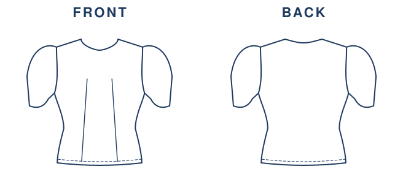
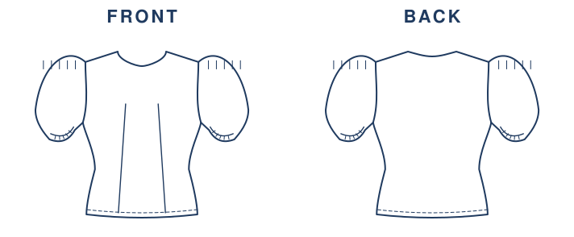
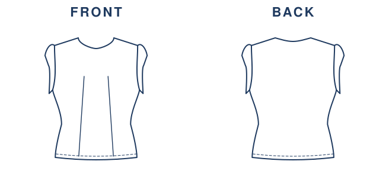
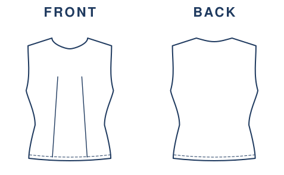

stitchuthe princess seam pair · real outputtiled to a4 · real layout
A photo goes in. A pattern, a flat and a sewing guide come out.
stitchu is a deterministic pattern engine. Hand it a photo, or build the recipe yourself from the garment vocabulary, and one C++ kernel draws all three from the same spec, in the standard sizes EU34 to EU48. Fixed sizes, not your own measurements: the sizes the engine publishes a shape for are the eight in contract/layers/shape-ratios.json.
what is it?A deterministic pattern engine. You give it a garment: upload a photo, or pick the garment, neckline, sleeve and skirt from the vocabulary the engine actually knows. It answers with the pattern pieces, the fashion flat and the sewing guide. Not a filter, not a template.
under the hood?A hand-built C++ kernel is the single source of every number: geometry, seam equalisation, notches, grainlines. The photo reader is the only part that uses a model, and it only ever writes into a locked vocabulary — a word the engine cannot draw is refused by name, never quietly swapped for something close.
which sizes?Eight standard sizes, EU34 to EU48, one per published shape ratio. Pick one, print it true-scale tiled to A4, sew it. Nothing about your body is uploaded, because nothing about your body is asked for. Start drafting ↓
01a photo, or a recipe you pick word by word
02the kernel drafts it in one of eight sizes, EU34 to EU48
03pattern, flat and sewing guide, all from that one spec
One spec. Three outputs.
The pattern pieces you cut, the fashion flat that says what the garment looks like, and the sewing guide that says what order to build it in. Same spec, three drawings, no clip art in any of them.
01 · the pattern · 10 pieces, drawn by the kernel02 · the flat · front and back, drawn by the flat engine

Straight sleeve, EU38 croquis, 1:3. The other three sleeve geometries the engine draws — balloon, cap, sleeveless — are further down. Honest seam: the flat engine and the pattern kernel are not joined yet, so the create page draws the pattern and the flat comes from the workbench.open the flat workbench →
03 · the sewing guide · the order it comes together
Prep. Check the calibration square, cut every piece as labelled (on fold / cut 2), muslin first if the fit matters.
Stabilise. Staystitch curved raw edges so they cannot stretch; fuse interfacing to facings, collars and plackets while flat.
Shape. Sew the darts or princess seams and form the gathers first, while each panel is still flat and single.
Flat add-ons. Work plackets, keyholes and back cutouts before the side seams close the garment into a tube.
Neck finish. Sew the shoulders, then attach and understitch the facing, set the collar, or run the binding while it still opens flat.
Close the tube. Sew the side seams, set in the sleeves, add the straps.
Skirt + join. Sew the skirt (leave the centre back open for the zipper), join it to the bodice at the waist matching side seams.
Closure. Insert the invisible zipper before closing the seam below it; sew and catch the ties at their notch.
Hem last. Try it on, mark, then hem; a half-circle hangs 24 h first so the bias drops before you cut it even.
Nine phases, and the draft result page picks the fabric reasoning and the steps that belong to the garment you actually drafted.read the full guide →
Then it prints. True-scale, tiled to A4, with a 3 cm square on the cover so you can prove your printer did not shrink it.
04 · true-scale, tiled to A4 · real layout
The sleeve is really drawn, four ways.
Not one sleeve shape stretched four times: four separate geometries, each one its own path in the flat engine. Straight, balloon, cap, and none.
straightballoon

cap

none

…and it isn't a one-dress trick. Same engine, same standard body, other silhouettes, every line below is real output.
babydoll dress · the full setknit dress · the full setbustier-length top · the full seta fuller body · drawn at bust 122 cm, past the published size run
What is actually measured, and what is not?
Every number below names the tool that prints it. If a number has no tool behind it, the sentence is not on this page.
Eight fixed sizes, EU34 to EU48.
Not your own measurements. The engine publishes a shape ratio for exactly eight sizes, and the size picker on the create page is built from that list, so you cannot pick a size the kernel has no shape for. If the kernel refuses a size in a graded run, it now comes back by name with its reason, instead of quietly vanishing from the count.
Five photos were read against a hand-labelled bank. One of the five came back as a fully correct spec. Field by field, 47 of 51 judgements matched. Five is a small denominator and it is printed here rather than hidden: the honest reading is that the field-level reader is strong and the whole-garment reader is not there yet.
Two edges that must sew together are measured against each other and the worst mismatch is printed. The tool reports to two decimal places, so two is what this page says; a two-decimal measurement is not allowed to be announced with six. This is internal consistency, not a fit guarantee — the fit test is still a muslin.
The pattern is drafted inside your browser by the engine itself. There is no body-measurement form to leak, because the engine draws standard sizes; if you upload a photo, that call is the only thing that leaves the page and it returns garment words, not a body.
on-device draft · no body form
One honest thing, and it is the biggest one: a pattern that validates is not the same as a pattern that sews up. The sewability checks in this repo still report violations, and the hip allowance sits under the published minimum in all eight sizes. So this page does not sell you a ready-to-sew pattern. It sells you a real draft, in a fixed size, that you check with a muslin before you cut anything you care about.
The recipe doesn't stop at an A4 printout. The same geometry exports to the files a production line actually reads, each one machine-checked against third-party tools, misses and limits published.
Industry interchange, not a screenshot.
The kernel's own geometry exports to DXF-AAMA/ASTM R12 (1 unit = 1 mm) on the standard layer convention: cut line, seamline, grainline, darts and notches, each on its named layer. Opened in ezdxf and measured vertex for vertex against the engine's own millimetres.
DXF-AAMA R12 · 1 unit = 1 mm · named layers
One design, the eight published sizes.
One recipe grades across EU34 to EU48 by re-drafting to each standard body, not by scaling one block. Growth follows the chart's own +4 to +6 cm jump rather than a fake fixed step. A size the kernel refuses is named in the result and left out of the run.
EU34–48 · re-drafted per size · refusals named
Cut pieces packed onto the fabric.
The graded pieces nest onto a marker at the roll width, and the overlap is checked by an independent geometry engine (shapely), not an in-house script: the check is a pairwise intersection test, and the layout must fit inside the width. That run was not repeated for this page, so no overlap number is printed here.
shapely-checked · number not re-run for this page
A production package a factory can read.
One recipe becomes a single machine-readable tech-pack: size table, cut list, fabric weight, marker efficiency and a graded DXF per size, plus a human-readable PDF spec sheet. The weight and efficiency maths are cross-checked, and a tampered value fails the verifier loudly.
manifest + graded DXF per size + PDF spec
These are the machine-checked gates: DXF, grading, nesting, tech-pack. The taste of a pattern and its true fit are still judged the old way, sew a toile, and a real pattern-cutter has the final word.
The same C++ drafting engine, behind one endpoint. POST /api/draft → a true-scale pattern in a standard size. One spec → the eight published sizes via /api/grade. No per-call AI cost.
Beta partners: free during the build. Studios, indie labels and pattern shops, send your volume. · see the API →
More of what it has already drawn.
Every drawing on this page is real engine output. Fixes and misses are published openly; the full audit trail is in the patch notes.see the patch notes →
Four couture looks stack the full feature vocabulary onto one dress.open the showcase →
Twelve sixties and seventies silhouettes, read from museum photos and drafted to full patterns.open the collection →
Nothing in this section will be sold to you today. None of it has a working example on this site, and each line below will stay in the future tense until a tool prints its number.
The fabric axis.
The same dress in two fabrics should not give the same pattern, because a crepe and a stiff cotton do not hang the same way. The engine will one day take the cloth as an input and return two different drafts. It does not do that today.
Limited words, unlimited garments.
A small vocabulary will one day combine into a very large space of real garments. The vocabulary is real and locked, but the in-between values on most axes still do not come back as a wearable garment, so there is no live example to show here.
Editing a drafted pattern.
One day you will be able to move a single line and have only that line move, with the rest of the pattern staying where it was. The door for this exists in the code — a locality check, an anchor vocabulary — but it has only ever been exercised on a single size and a single spec, and the anchor vocabulary is not on the main branch. This will be a product later; it is not a demo now.
Accounts, a forum and an iOS app are all planned and none of them exist.